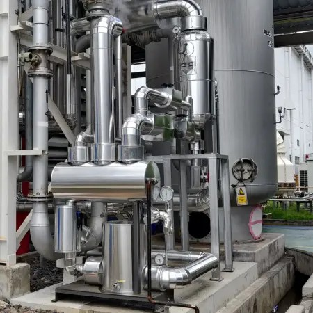
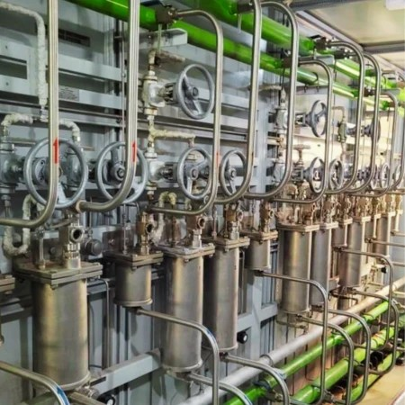
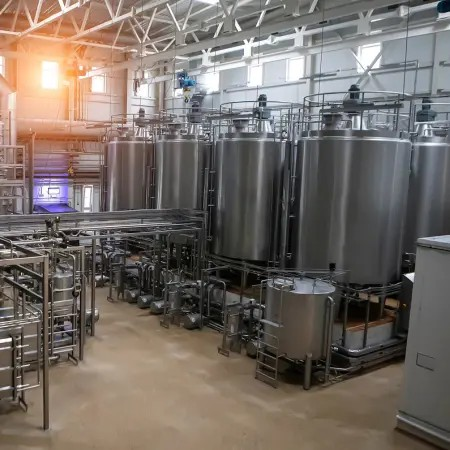
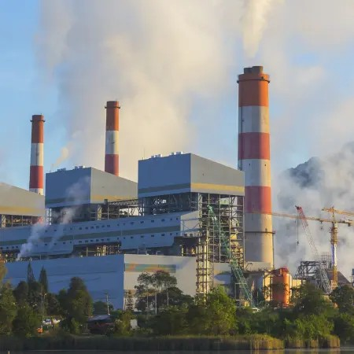

Fabrication & installation
Precise tanks, piping, and process systems with coordinated site installation.
Engineering delivery partner Process industries
From greenfield builds to brownfield upgrades, Fidel brings engineering, fabrication, field leadership, and workforce support together around one goal: moving your operation forward.

The right capability at the right phase keeps decisions moving, quality visible, and your teams focused on production.
Engineering, fabrication and commissioning for process industries.
Explore engineering deliveryProject management, HR services and operational support for the teams that keep sites moving.
Meet the delivery teamFrom production expansion to plant modernization, our teams adapt the delivery model to the operating reality of your industry.
Precise tanks, piping, and process systems with coordinated site installation.
End-to-end execution from engineering and procurement through commissioning.
Practical process, layout, and operational guidance shaped around your plant.
Fidel combines engineering depth with site-level accountability to help clients expand capacity, optimize layouts, and de-risk greenfield and brownfield investments.
We work across dairy, ethanol, beverages, sugar, chemical, oil & gas, and pharma plants with safety, quality, and schedules in view.
How we work
Upgraded processing systems while keeping production continuity in view.
Read project
A complete package with automation, controls, and safety-led execution.
Read project
Clean process piping installed for a pharmaceutical production line.
Read project